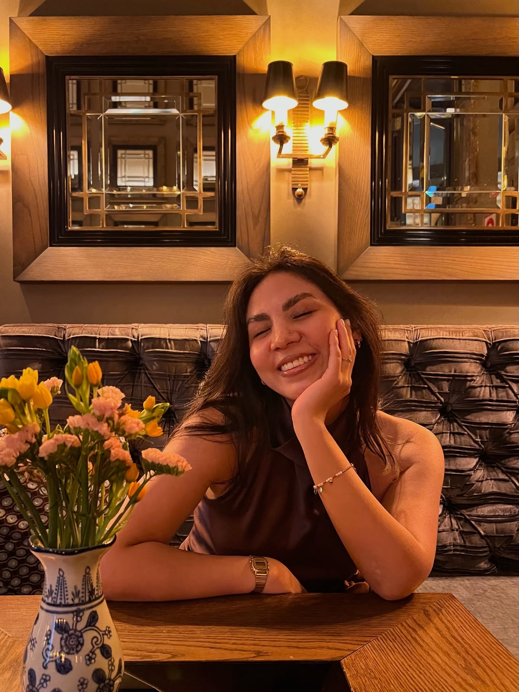

Mi hermosa Tauro,
nunca apagues tu universo

No escuches a quien se burla
de aquello que te hace soñar,
hay quienes presumen de sabios
porque no saben respetar.
Qué triste es creerse inteligente
por despreciar lo que otro siente,
confundir la burla con razón
y la soberbia con conocimiento.
Tonta es quien se cree perfecta,
quien nunca se equivoca en su propia opinión;
quien, por sentirse dueña de la verdad,
desprecia lo que no comprende de otro corazón.
Quien confunde la soberbia con inteligencia,
y cree que reconocer un error es debilidad;
sin darse cuenta de que la verdadera grandeza
está en tener humildad para aceptar la realidad.
Porque tonta no es quien mira las estrellas,
quien encuentra en los signos respuestas bonitas,
quien cree que existen energías y conexiones
que hacen que algunas almas se sientan benditas.
Mi gordita hermosa, tú sigue creyendo,
sigue encontrando magia en el universo,
sigue confiando en esas energías que sientes
y descubriendo señales en cada encuentro.
Qué bonito que existan los signos,
que haya quien encuentre en ellos una razón,
una forma de comprender las diferencias
y de ponerle palabras a lo que siente el corazón.
Qué bonito creer que no todo es casualidad,
que existen energías que nos pueden conectar,
que hay personas que llegan a nuestras vidas
y que, de alguna forma, estaban destinadas a llegar.
Y aunque alguien se ría de tus creencias,
aunque no comprenda tu forma de mirar,
jamás permitas que su ignorancia
te quite las ganas de imaginar.
Porque yo veo algo más que un signo
cuando mis ojos se encuentran con los tuyos;
veo una mujer inmensamente hermosa,
un alma preciosa y un amor profundo.
Mi gordita, eres perfecta,
inteligente, preciosa y tan linda por dentro,
con esa belleza que ilumina mis días
y esa forma de amar que me roba el aliento.
Eres hermosa cuando ríes sin motivo,
cuando hablas de aquello que te hace ilusión,
cuando defiendes tus ideas con el alma
y cuando entregas lo mejor de tu corazón.
Porque eres perfecta en cada detalle,
en tu mirada, tu esencia y tu forma de sentir;
tienes una belleza que va más allá de lo imaginable
y una inteligencia que me enamora cada día más de ti.
Eres esa mezcla de dulzura y fortaleza,
de ternura infinita y carácter especial;
mi mujer bonita, mi mayor certeza,
mi forma favorita de la felicidad.
Y si alguien no consigue ver lo maravillosa que eres,
no cambia ni un poquito la verdad de lo que veo en ti;
porque yo tengo la suerte de conocerte de cerca
y cada día encuentro más razones para amarte así.
Veo esa forma tan tuya de entregarte,
esa ternura que no sabe de mitades,
esa fuerza de amar con toda el alma,
esa lealtad que vale más que mil verdades.
Y si dicen que Tauro ama intensamente,
que es fiel, que es constante y sabe cuidar,
yo no necesito consultar las estrellas:
me basta con tenerte y poderlo comprobar.
Qué bonito es que creas en las energías,
en los signos y en las conexiones del corazón,
que encuentres magia en las cosas de la vida
y que sigas tus sentimientos con tanta pasión.
Que hablen los astros, que el universo nos cuente su versión;
yo encontré en ti mi coincidencia más bonita,
mi casualidad favorita, mi hogar y mi amor.
Y si creer en la magia es una tontería,
entonces qué bonito ser tonto por amor,
porque desde que llegaste a mi vida,
hasta lo inexplicable tiene sentido en mi corazón.
Nunca te avergüences de aquello que te hace especial,
ni permitas que alguien te enseñe a dejar de brillar.
Hay personas que creen tener todas las respuestas,
pero tú sabes que siempre hay algo hermoso por explorar.
No dejes que alguien que presume saberlo todo
te haga dudar de lo que eres y de lo que sientes.
La gente verdaderamente sabia no necesita humillar,
porque sabe que siempre hay algo nuevo que aprender.
Y yo, mi hermosa Tauro, entre millones de estrellas,
no necesito que los astros me digan quién es la más bella.
Porque si el universo me preguntara dónde quiero vivir,
le diría: en esos ojos que me enamoran,
en esos brazos que me abrazan,
en ese corazón que elegí.
Mi gordita hermosa, mi niña preciosa,
mi amor bonito, mi estrella luminosa;
si alguna vez el mundo te hace dudar de tu valor,
recuerda que en mis ojos eres inmensa
y en mi vida ocupas un lugar que nadie más ocupó.
No hay burla que pueda apagar tu esencia,
ni opinión que pueda cambiar lo que veo en ti:
una mujer inteligente, hermosa y maravillosa,
la persona que mi corazón eligió para ser feliz.
Y si volviera a nacer mil veces,
si pudiera elegir entre infinitos destinos,
le pediría al universo la misma fortuna:
volver a encontrarte en todos mis caminos.
Te amo a morir, mi niña bonita.
Y si volviera a nacer mil veces,
le pediría al universo el mismo regalo:
encontrarte en cada vida,
reconocerte entre la gente
y volver a enamorarme de ti,
una y mil veces. ❤️
Porque eres mi casualidad más bonita,
mi señal favorita, mi paz y mi verdad;
mi Tauro, mi gordita, mi amor infinito,
mi más hermosa forma de felicidad.
Y si el universo es infinito,
que infinito sea también lo que siento por ti.
Que las estrellas sigan brillando,
que las energías nos sigan conectando
y que nunca nos falten motivos para sonreír.
Porque entre tantas almas y tantas estrellas,
entre tantas historias que pudieron existir,
yo no necesito que los astros me digan quién es la más bella:
mi corazón ya te eligió a ti. 🌙♉❤️
Muero de amor cuando te veo 🌙❤️
CON TODO MI AMOR, PARA SIEMPRE